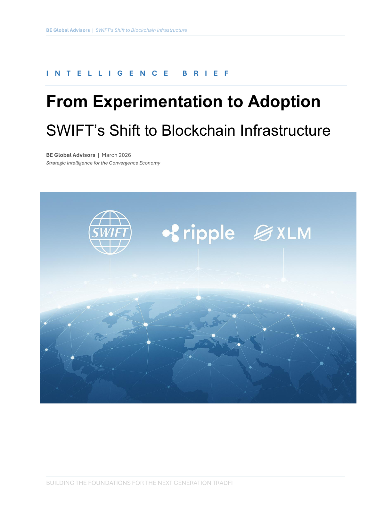

Tokenization
SWIFT's Shift to Blockchain Infrastructure

Executive summary
- SWIFT's transition from experimentation to production signals an institutional validation point for shared ledger infrastructure.
- Interoperability and compliance architecture, not token issuance alone, are the decisive bottlenecks for scale.
- Firms should re-evaluate operating assumptions for settlement speed, transparency, and control responsibilities.
- Adoption risk shifts from technology uncertainty toward execution sequencing and governance design.
- Early movers can shape partner standards and data conventions before defaults harden across networks.
From pilot signaling to operating reality
SWIFT's posture suggests that tokenized finance infrastructure has moved into implementation planning for mainstream institutions, with tangible implications for architecture decisions now.
The strategic test is interoperability
Competing systems can coexist only if messaging, identity, and policy layers align. Institutions that delay these alignment decisions risk costly rework later.
Leadership implications
Executives should assign clear ownership for tokenization strategy across technology, treasury, and risk teams, with common milestones and measurable operating outcomes.